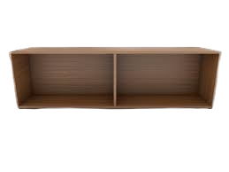
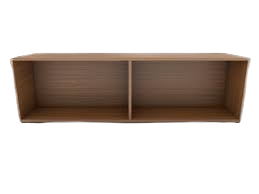

Transformando madeira em peças únicas
Oficina artesanal com atenção ao detalhe, móveis sob medida e restaurações com acabamento profissional. Veja alguns trabalhos na seção “Trabalhos”.
Sobre o Marceneiro
O Sr. Raimundo é um profissional com longa experiência em marcenaria, especializado em móveis sob medida, portas e peças decorativas. Trabalho artesanal com técnicas tradicionais e ferramentas modernas, sempre priorizando acabamento e durabilidade.
Sobre a Marcenaria
Localizada na Rua Antonio da Costa, nº 455, Vila Nova, Zé Doca-MA.
Contatos:
- Telefone: (00) 1234-5678
- WhatsApp: (00) 91234-5678
Trabalhos Realizados
 
